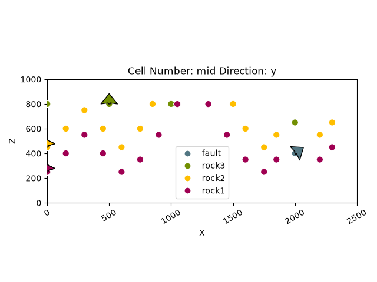
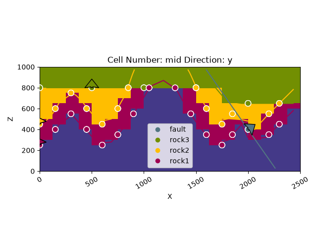
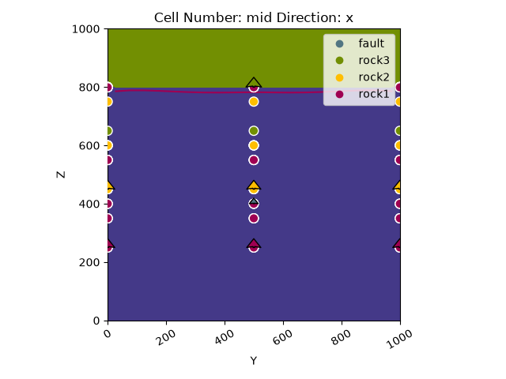
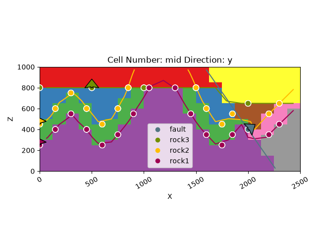
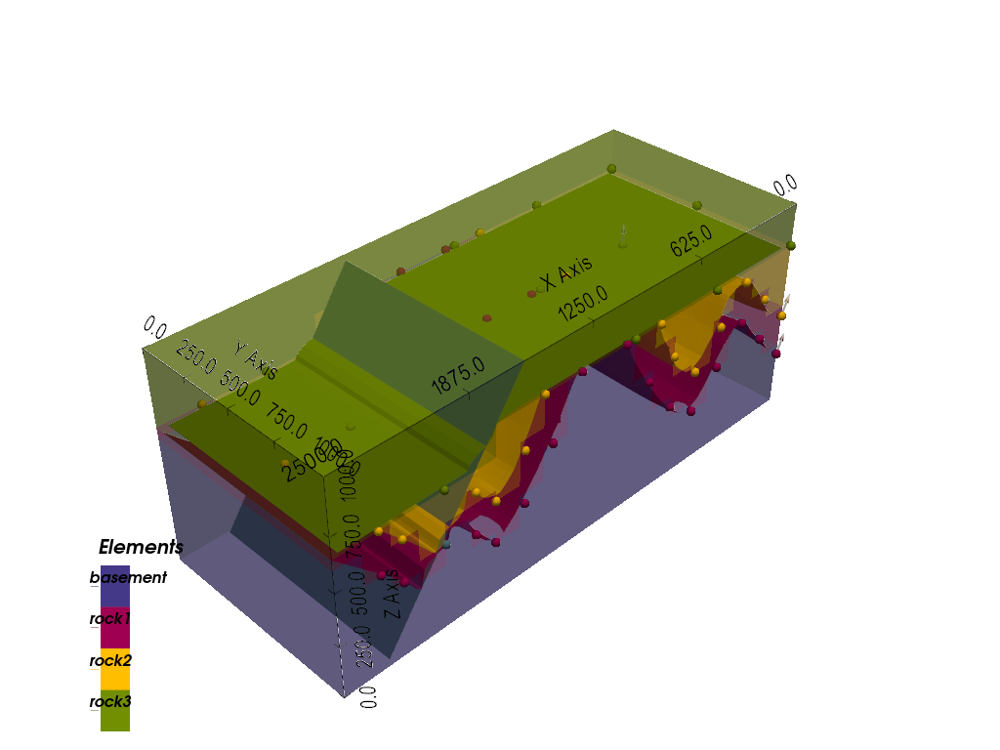

Note
Go to the end to download the full example code.
Model 7 - Combination¶
Combining faults and unconformities
This script creates a folded domain featuring an unconformity and a fault using GemPy, an open-source, Python-based library for building implicit geological models.
# Import necessary libraries
import gempy as gp
import gempy_viewer as gpv
# sphinx_gallery_thumbnail_number = 2
Generate the model¶
Define the path to the input data
data_path = 'https://raw.githubusercontent.com/cgre-aachen/gempy_data/master/'
path_to_data = data_path + "/data/input_data/jan_models/"
# Create a GeoModel instance
geo_model = gp.create_geomodel(
project_name='combination',
extent=[0, 2500, 0, 1000, 0, 1000],
resolution=[20, 20, 20],
refinement=6,
importer_helper=gp.data.ImporterHelper(
path_to_orientations=path_to_data + "model7_orientations.csv",
path_to_surface_points=path_to_data + "model7_surface_points.csv"
)
)
# Map geological series to surfaces
gp.map_stack_to_surfaces(
gempy_model=geo_model,
mapping_object={
"Fault_Series": 'fault',
"Strat_Series1": 'rock3',
"Strat_Series2": ('rock2', 'rock1'),
}
)
# Define the youngest structural group as a fault
gp.set_is_fault(geo_model, ["Fault_Series"])
# Increase octree surface resolution for a more accurate fault surface
geo_model.interpolation_options.number_octree_levels_surface = 5
# Compute the geological model
gp.compute_model(geo_model)
Surface points hash: dd7b2f714c1c20cb7ce615c5c47ecc4cf3ca2ee3419e4090b2f11fbf633d459f
Orientations hash: 4043b59bbfa7012abd818f04f74e2b0667ba970dd71c781512289bc073f5a6d5
Setting Backend To: AvailableBackends.PYTORCH
GPU enabled. Using device: cuda
GPU device count: 1
Current GPU device: 0
Chunking done: 6 chunks
Chunking done: 26 chunks
Chunking done: 13 chunks
Chunking done: 8 chunks
2D visualization¶
Plot the initial input data in the y direction, without computed results
gpv.plot_2d(geo_model, direction=['y'], show_results=False)

<gempy_viewer.modules.plot_2d.visualization_2d.Plot2D object at 0x7f3e459464d0>
Plot the computed result in the y and x directions, with data


<gempy_viewer.modules.plot_2d.visualization_2d.Plot2D object at 0x7f3eea273950>
Plot the lithology blocks accounting for fault offsets

<gempy_viewer.modules.plot_2d.visualization_2d.Plot2D object at 0x7f3e459463d0>
3D visualization¶
Display the computed model in 3D
gpv.plot_3d(geo_model, show_lith=True, show_boundaries=True, ve=None)

<gempy_viewer.modules.plot_3d.vista.GemPyToVista object at 0x7f3e3d42e350>
Total running time of the script: (0 minutes 5.553 seconds)